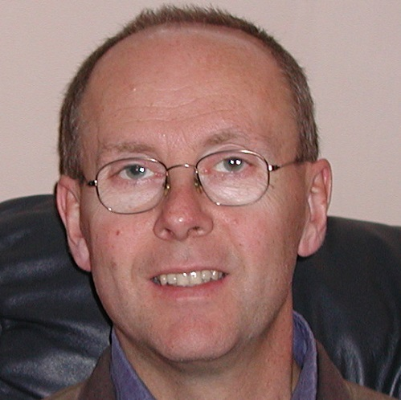

Dr Jon Busby
Biography
Jon is the Team Leader for Renewables, Energy Storage and Clean Coal at the British Geological Survey in Keyworth and leads the BGS's geothermal research. Jon has research interests in both shallow and deep geothermal. He has been working to improve shallow thermal properties from analyses of disparate data sets, most notably mineralogical and soil temperature. He is leading the BGS input to a European project to provide suitability maps for shallow geothermal ground collector systems. Jon has researched the temperature and heat flow field of the UK and worked on projects for deep geothermal assessments and is currently leading a project to re-evaluate the deep geothermal resources of the UK. He currently represents the UK on the Executive Committee of the International Energy Agency Geothermal Implementation Agreement.
Publications
- Busby, J., Lewis, M., Reeves, H., & Lawley, R. (2009). "Initial geological considerations before installing ground source heat pump systems." Quarterly Journal of Engineering Geology and Hydrogeology, 42(3), p295-306
- Busby, J., Kingdon, A., & Williams, J. (2011). "The measured shallow temperature field in Britain." Quarterly Journal of Engineering Geology and Hydrogeology, 44(3), p373-387
- Busby J P, 2010. "Geothermal prospects in the United Kingdom." In: Proceedings World Geothermal Congress 2010, Bali, Indonesia, 25-29 April 2010, pp 7.